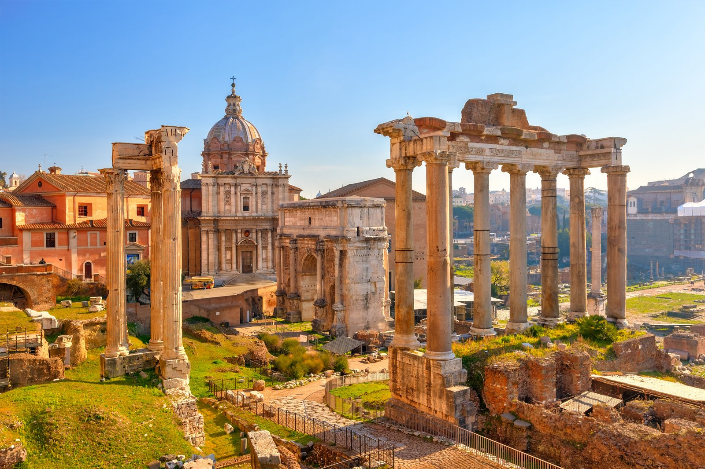

古羅馬城
古羅馬廣場坐落在羅馬帕拉提諾之丘和卡比托利歐山之間的山谷中，占地遼闊，漫步其中，眼前所見盡是巨大拱門、高聳圓柱、紀念碑、雕刻花園、
泳池和泉池等羅馬神廟和教堂遺址。
古羅馬廣場內的神廟遺址是維納斯和羅馬神廟、凱撒神廟、維斯帕先和提圖斯神廟以及羅慕路斯神廟。最重要的農神廟雖然只留存正面門廊，但其雄偉建築
仍雄踞廣場的天際線。廣場占地 4 公頃，可以選擇騎乘賽格威兩輪平衡車探索這座山谷，這會是一種有趣的體驗。
古羅馬廣場坐落在羅馬帕拉提諾之丘和卡比托利歐山之間的山谷中，占地遼闊，漫步其中，眼前所見盡是巨大拱門、高聳圓柱、紀念碑、雕刻花園、
泳池和泉池等羅馬神廟和教堂遺址。
古羅馬廣場內的神廟遺址是維納斯和羅馬神廟、凱撒神廟、維斯帕先和提圖斯神廟以及羅慕路斯神廟。最重要的農神廟雖然只留存正面門廊，但其雄偉建築
仍雄踞廣場的天際線。廣場占地 4 公頃，可以選擇騎乘賽格威兩輪平衡車探索這座山谷，這會是一種有趣的體驗。